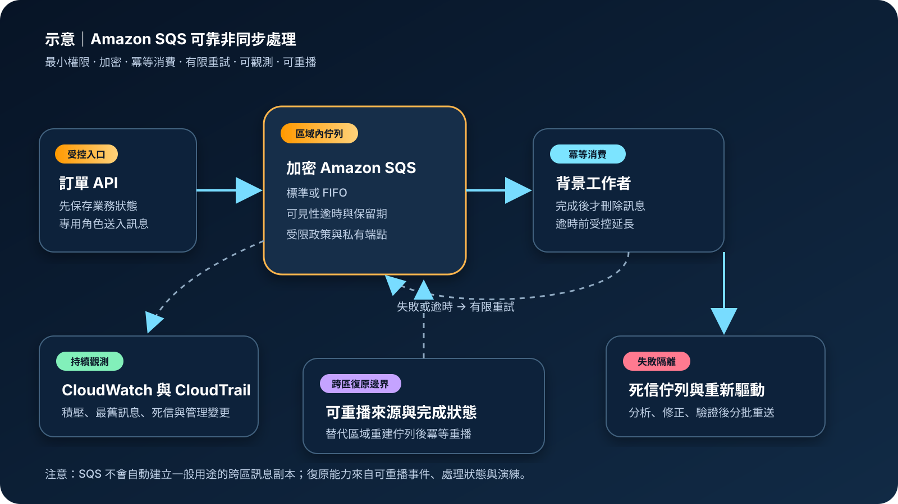

Amazon SQS：訊息佇列、解耦與可靠處理
Amazon Simple Queue Service（Amazon SQS）是受管訊息佇列服務，用來把產生工作的一方與執行工作的一方分離。它能緩衝流量、保存待處理訊息並支援失敗重試，但不會自行保證業務操作只執行一次、訊息內容正確或跨區災難後自動延續處理。
作者：Dr. William｜查閱與發布：2026-09-21
服務定位
Amazon SQS 位於訊息生產者與消費者之間。生產者只需將工作描述送入佇列，不必等待後端完成；消費者依自身容量拉取並處理訊息，成功後再刪除。這種非同步模型可降低元件直接相依、吸收短時間尖峰，並讓故障的消費者在恢復後繼續處理積壓。
SQS 不是事件內容的永久資料庫、交易協調器、工作流程引擎或串流分析平台。需要長時間多步驟編排時可評估 AWS Step Functions；需要主題式推播時可評估 Amazon SNS；需要事件路由與規則比對時可評估 Amazon EventBridge；需要長期保存與重播大量事件時則應評估串流或物件儲存方案。
核心概念與適用邊界
主要元件
- 標準佇列：提供很高的吞吐量與至少一次投遞；訊息可能重複，順序也可能改變，消費者必須具備冪等性。
- FIFO 佇列：在相同訊息群組內維持順序，並以去重機制降低重複送入；吞吐、群組設計與五分鐘去重窗口仍需納入架構。
- 可見性逾時：訊息被取出後會暫時對其他消費者隱藏；若未在期限內刪除，訊息會再次可見。
- 長輪詢與批次：長輪詢可減少空回應；批次收送與刪除可降低請求數，但每筆訊息仍需個別確認處理結果。
- 訊息保留：訊息可保留 60 秒至 14 天；超過保留期即由服務刪除，不適合作為永久稽核來源。
- 死信佇列：訊息超過指定接收次數後移至另一佇列，供隔離、分析、修正與重新驅動。
邊界與依賴
- SQS 是區域性服務；佇列、政策、KMS 金鑰、死信佇列與監控需按區域建立。
- 訊息成功取出不代表處理成功，只有完成業務操作後刪除訊息才結束該次生命週期。
- 至少一次投遞、逾時與網路重試都可能造成重複處理；冪等控制屬於應用程式責任。
- FIFO 僅在訊息群組內提供順序；單一群組可能造成佇頭阻塞，死信流程也可能改變完整序列語意。
- 伺服器端加密保護訊息本文的靜態資料，不涵蓋佇列名稱、部分訊息中繼資料、指標或應用日誌。
- SQS 沒有一般用途的原生跨區佇列複寫；跨區復原需由來源事件保存、雙寫或可重播設計完成。
適合與不適合的使用情境
適合
- 網站收到訂單、圖片、報表或通知工作後，需要立即回應使用者並交由背景工作者處理。
- 突發流量可能短時間超過後端容量，需要以佇列深度吸收尖峰並依積壓擴縮消費者。
- 多個工作者需要分攤獨立任務，且可以透過冪等鍵、狀態表或條件寫入避免重複副作用。
- 失敗訊息需要有限次重試、死信隔離、人工或自動修正後再重新驅動。
不適合或不能單獨完成
- 使用者必須在同一請求中立即取得後端運算結果，且無法接受非同步狀態查詢時。
- 需要永久保存、任意時間重播或由大量訂閱者各自保留完整事件歷史時。
- 需要跨多步驟交易的一致提交、補償與逾時治理時，SQS 必須與工作流程或交易設計整合。
- 業務要求嚴格的全域總順序，但無法接受單一序列造成的吞吐限制與阻塞時。
示意故事案例：訂單後台的可靠處理通道
以下為示意案例，不代表特定組織或正式部署。 一個購物網站在訂單資料完成交易式寫入後，由事件轉送元件把不含敏感明文的處理指令送入標準佇列。API 不等待庫存同步、通知與發票工作全部完成，因此尖峰期間仍可快速回應。消費者使用專用 IAM 角色、私有網路路徑與短期權限，依訊息中的業務識別值檢查是否已完成相同操作。
消費者成功提交結果後才刪除訊息；處理時間接近上限時延長可見性逾時。持續失敗的訊息在有限次重試後進入加密的死信佇列，CloudWatch 告警通知值班人員。團隊修正原因後，先在隔離環境驗證，再按批次重新驅動。原始訂單事件另存於可長期保留的資料來源，使主要區域中斷時能在替代區域重新建立佇列並重播尚未完成的工作。

建置與運作流程
- 定義訊息契約：指定版本、業務識別值、必要欄位、大小限制、敏感資料規則與相容策略；大型內容放入受控儲存，訊息只保存引用。
- 選擇佇列類型：高吞吐且可容忍重複與亂序時使用標準佇列；需要群組內順序時使用 FIFO，並設計足夠訊息群組避免單點阻塞。
- 建立權限邊界：生產者只可送入指定佇列，消費者只可接收與刪除指定佇列，維運角色另行限制修改政策、清空與刪除權限。
- 設定加密與網路：依治理需求選擇 SQS 管理或客戶管理 KMS 金鑰，強制 TLS；私有工作負載使用適當 VPC 端點與最小化端點政策。
- 調整逾時與保留：以實際處理分布設定可見性逾時、長輪詢、訊息保留與接收等待；長工作採心跳延長，但不能超過服務限制。
- 實作冪等消費：在產生不可逆副作用前，以業務鍵、條件寫入或狀態紀錄判斷是否已完成；重複訊息回傳既有結果而非再次執行。
- 建立重試與死信：依暫時性與永久性錯誤分類，設定合理接收次數、退避與死信佇列；死信保留時間應長於來源佇列。
- 觀測與擴縮：監控可見訊息、處理中訊息、最舊訊息年齡、死信數量、處理延遲與錯誤率，依積壓與處理時間擴縮消費者。
- 設計復原：保存可重播的來源事件與處理狀態，準備替代區域的佇列、金鑰、政策、消費者及切換程序，定期演練去重與重播。
成本、可用性與維運考量
SQS 主要按 API 請求計費；每個收送、刪除、變更可見性與其他動作都可能計入請求，訊息負載會依 64 KB 區塊計量。長輪詢、批次操作與合理訊息大小可降低請求量。FIFO、跨區資料傳輸、KMS、CloudTrail 資料事件、CloudWatch、VPC 端點、Lambda 或運算消費者，以及大型內容使用 S3 都可能增加整體成本。
SQS 由服務管理基礎設施並在區域內提供高可用訊息保存，但應用仍會受到區域中斷、服務配額、錯誤政策、KMS 權限、消費者容量與下游故障影響。可用性設計應讓消費者分散於多個可用區，避免單一工作者、單一金鑰管理路徑或單一外部依賴成為共同故障點。
佇列深度不是唯一容量訊號。最舊訊息年齡可顯示實際延遲，處理中訊息數可反映逾時或卡住的工作。跨區災難復原不能只建立空佇列；必須同步基礎設施設定、授權與消費者，並從可信來源辨識尚未完成的工作，以冪等方式重播。
Amazon SQS 特有資安風險與控制
- 佇列政策過度公開：禁止匿名或廣泛 Principal，限定帳號、組織、角色、來源服務、動作及資源；以 IAM Access Analyzer 檢查外部存取。
- 跨服務混淆代理：服務對服務送入訊息時加入適用的來源帳號與來源資源條件，避免其他資源借用既有授權。
- 長期身分資訊外洩：人員使用聯合登入、MFA 與短期憑證，工作負載使用 IAM 角色；不在程式碼、映像或設定檔保存長期驗證資料。
- 訊息重複造成重複扣款或通知：以不可變業務識別值、條件寫入與處理狀態建立冪等性，測試逾時、重試與回應遺失情境。
- 可見性逾時錯配：依處理時間分布設定逾時並以心跳延長；完成業務操作後立即刪除，失敗時交由受控重試而非無限隱藏。
- 毒性訊息阻塞：設定足夠但有限的接收次數與死信佇列，對死信告警、分類、保全與重新驅動；FIFO 流程需評估順序破壞。
- 敏感內容外洩：訊息只放必要欄位，避免在名稱與中繼資料中放敏感資訊；靜態資料使用 SSE，傳輸強制 TLS，應用日誌另做遮罩。
- KMS 權限中斷：生產者與消費者必須具備精確金鑰使用權，管理與使用職責分離；監控政策變更、停用與刪除排程並驗證復原區域金鑰。
- 網路路徑暴露：私有工作負載經 VPC 端點存取 SQS，以端點政策和佇列政策限制來源，減少不必要的公網出口。
- 清空或刪除誤操作：嚴格限制 PurgeQueue、DeleteQueue 與 SetQueueAttributes，重要變更採分離核准並對管理事件告警。
- 稽核盲點：CloudTrail 預設管理事件不足以呈現所有訊息活動；依風險選擇特定佇列與動作的資料事件，並控制高流量成本與敏感欄位曝露。
- 區域故障與無法重播：把原始業務事件和完成狀態保存在可復原資料來源，預建替代區域基礎設施，演練切換、去重、重播與回切。
共同責任邊界
AWS 負責 SQS 受管服務及底層雲端基礎設施的安全、維護與區域內服務運作。客戶負責訊息內容與分類、佇列類型、保留與逾時、IAM 和資源政策、KMS 設定、網路存取、冪等性、重試與死信處理、消費者程式、監控，以及跨區復原架構。
客戶仍須落實 IAM 最小權限、人員 MFA 與短期憑證、帳號與網路隔離、公開存取盤點、KMS 加密、Secrets Manager／Parameter Store 管理下游連線設定、CloudTrail／CloudWatch 觀測，以及來源事件、處理狀態與基礎設施的備份及跨區復原。AWS 不會替客戶判斷訊息是否合法、確保副作用只執行一次，或自動重建另一區域的處理進度。
上線前可執行檢查清單
- □ 已依吞吐、重複、順序與訊息群組需求選擇標準或 FIFO 佇列。
- □ 訊息契約含版本與業務識別值，沒有不必要敏感內容，大小與保留期符合需求。
- □ 生產、消費、死信處理與管理角色分離，權限限定至必要佇列和動作。
- □ 人員使用聯合登入、MFA 與短期憑證；工作負載使用 IAM 角色。
- □ 佇列政策沒有匿名或廣泛外部存取，跨服務授權包含適用的來源限制。
- □ 所有連線強制 TLS；私有工作負載已驗證 VPC 端點、DNS、端點政策與佇列政策。
- □ SSE 已啟用；若使用客戶管理 KMS 金鑰，生產者、消費者、服務整合與復原權限均已測試。
- □ 消費者具備冪等性，已測試重複投遞、亂序、逾時、回應遺失及部分成功。
- □ 可見性逾時符合處理時間，長工作有受控延長，成功後才刪除訊息。
- □ 重試次數、退避、死信保留與重新驅動流程已設定，死信佇列有告警與處置責任人。
- □ CloudWatch 監控佇列深度、最舊訊息年齡、處理中訊息、死信數量、延遲與消費錯誤。
- □ CloudTrail 管理事件集中保存；高風險佇列的資料事件範圍與成本已評估。
- □ PurgeQueue、DeleteQueue、政策與 KMS 變更受到額外限制、告警與分離核准。
- □ 原始事件與完成狀態可重播，替代區域的佇列、金鑰、政策與消費者已建立並演練。
- □ 已估算請求、負載區塊、FIFO、資料傳輸、KMS、CloudTrail、CloudWatch、VPC 端點與消費者成本。
AWS 官方一手來源
- Amazon SQS Developer Guide｜What is Amazon SQS?（查閱：2026-09-21）
- Amazon SQS queue types（查閱：2026-09-21）
- Amazon SQS visibility timeout（查閱：2026-09-21）
- Using dead-letter queues in Amazon SQS（查閱：2026-09-21）
- Amazon SQS security best practices（查閱：2026-09-21）
- Encryption at rest in Amazon SQS（查閱：2026-09-21）
- Logging Amazon SQS API calls using AWS CloudTrail（查閱：2026-09-21）
- Outage recovery scenarios in Amazon SQS（查閱：2026-09-21）
- Amazon SQS pricing（查閱：2026-09-21）
- AWS Well-Architected Security Pillar｜Shared responsibility（查閱：2026-09-21）
內容說明
本文依查閱日可用的 AWS 官方文件整理，作為基礎學習與架構討論材料；實際部署仍須依最新功能、區域支援、價格、配額、組織政策、資料分類、法規及復原演練結果調整。